WWDC 2023: Build programmatic UI with Xcode Previews
Find hereafter a detailed summary of a video that belongs to a taxonomy of some WWDC footages.
The original videos is available on the Apple official website (session 10252).
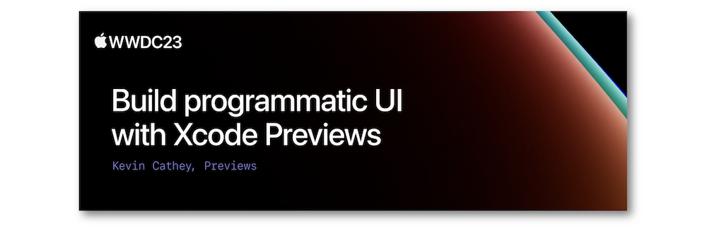
"Learn how you can use the #Preview macro on Xcode 15 to quickly iterate on your UI code written in SwiftUI, UIKit, or AppKit. Explore a collage of unique workflows for interacting with views right in the canvas, find out how to view multiple variations of UI simultaneously, and discover how you can travel through your widget's timeline in seconds to test the transitions between entries. We'll also show you how to add previews to libraries, provide sample assets, and preview your views in your physical devices to leverage their capabilities and existing data."
Hereafter, the underlined elements lead directly to the playback of the WWDC video at the appropriate moment.
Overview #
Previews are handled by the #Preview macro to return views that are automatically managed by the system when changes are added in the Swift code.
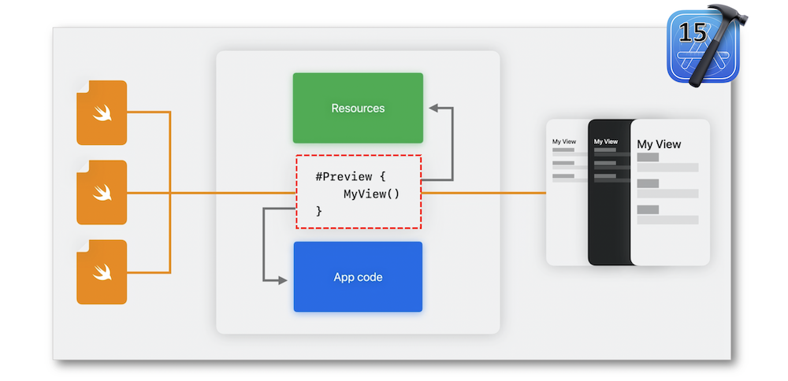
Using the previews leads towards major pros that streamline the code programing.
Previews contents #
Two different types of elements can be previewed: the views and the widgets.
Views #
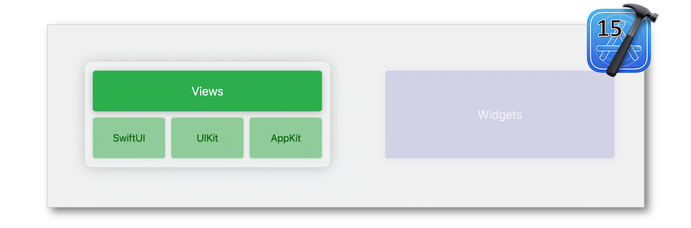
Regarded as scenes, the previews may display nested views with added modifiers and dedicated configuration traits if need be.
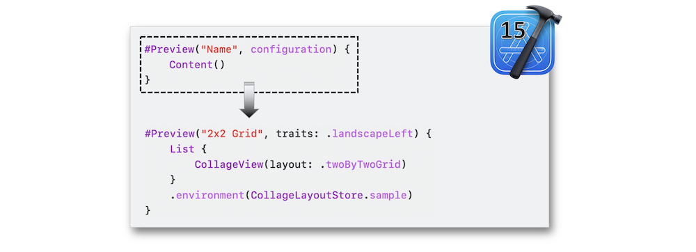
According to the use case, a view controller might need to be incorporated for getting the sought preview.
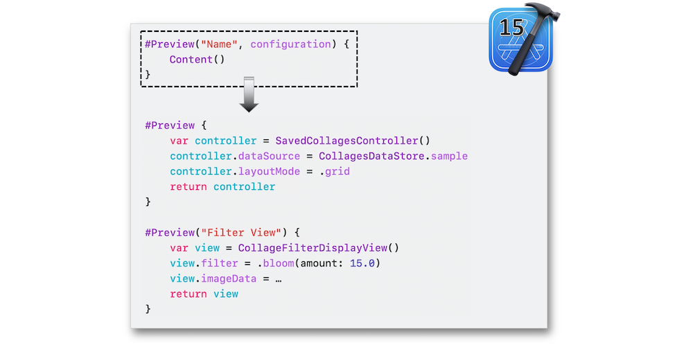
Widgets #
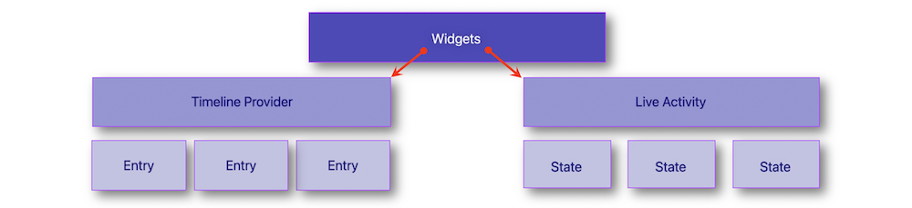
Regarding the timeline provider, the canvas supplies snapshots so as to take a look at the final rendering.
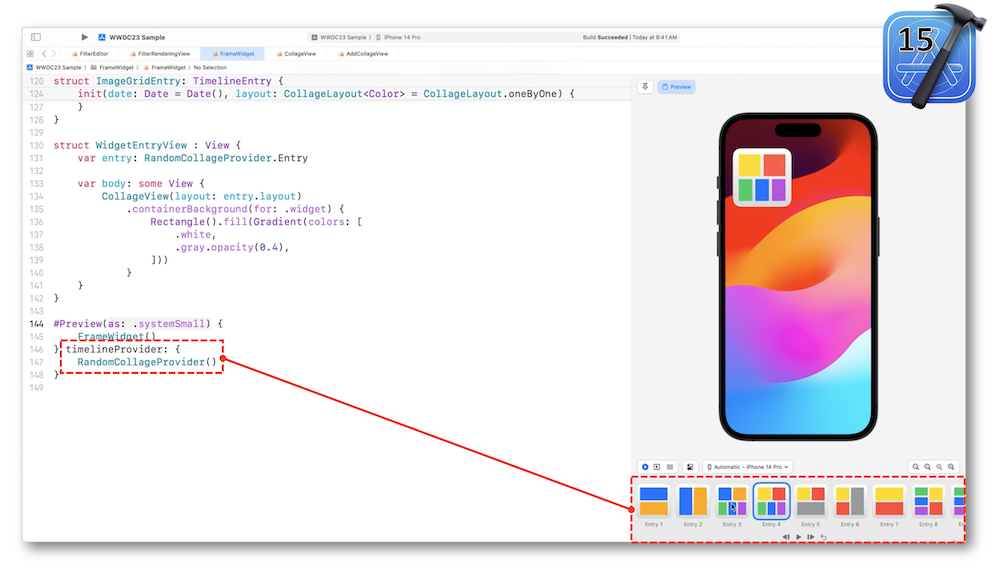
A specific timeline for particular entries may also be implemented for assessing special use cases that can be fixed in the canvas thanks to the pin button when going to other files.
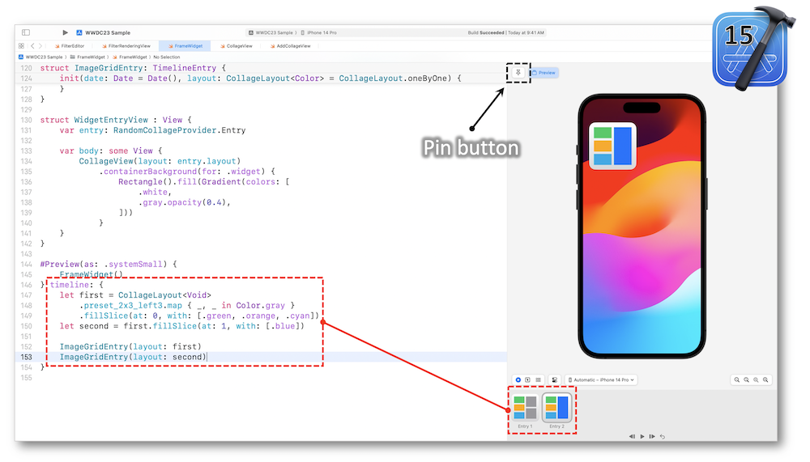
This type of widget requires two kind of sets: the live activity attributes and their possible states.
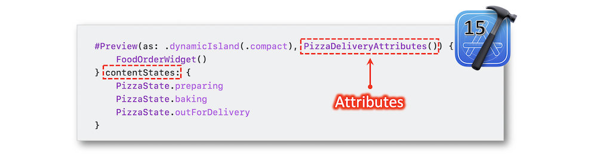
Xcode features #
Canvas #
Before dealing with the previews, it's important to be sure the canvas mode is enabled.
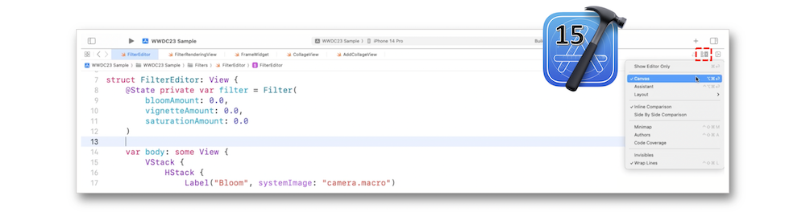
When enabled, the canvas is displayed and concomittandly updated as soon as the first preview is implemented.
Mode of previews #
The first mode is the live mode that gives rise to interactivity, animations and asynchronous actions through the canvas.
The static mode renders a snapshot of the view and enables interactions with the components while changing the code thereof.
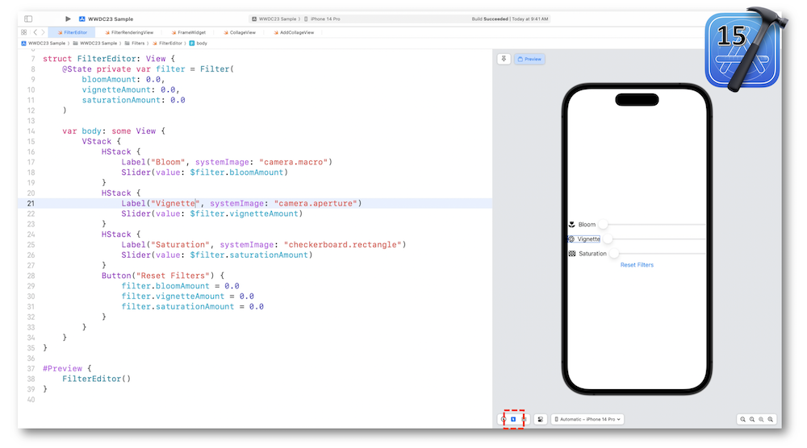
The variants mode displays the settings for the features provided in the preview environment explained in the next tab.
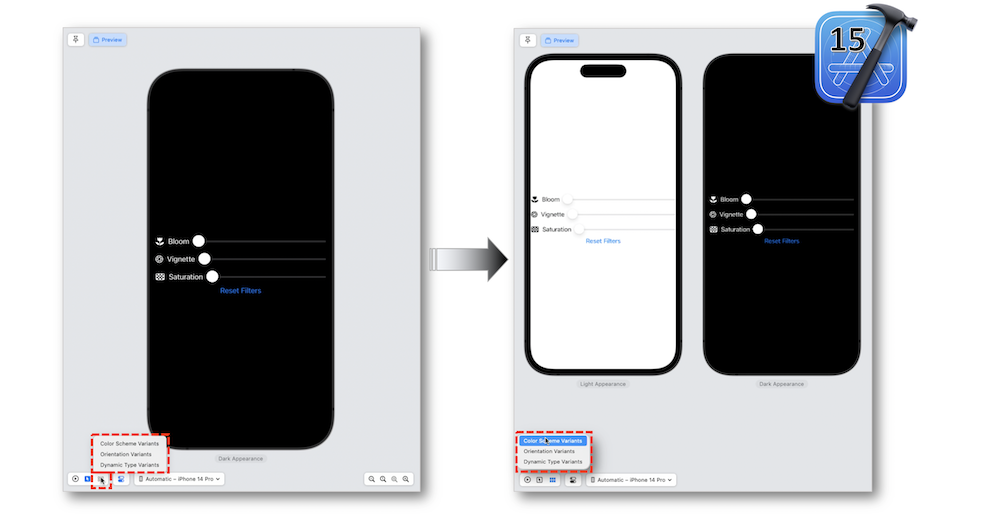
All the dynamic type sizes can be rendered while selecting one of them and enabling to slide towards each other.
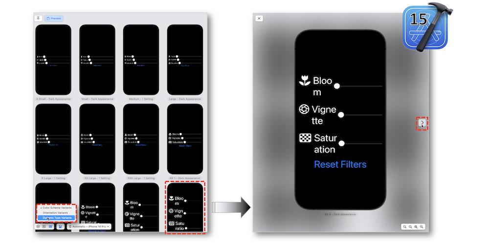
The previews may also be enriched by the Color Scheme, the Orientation and the Dynamic Type feature through the Device Settings popover located in the canvas.
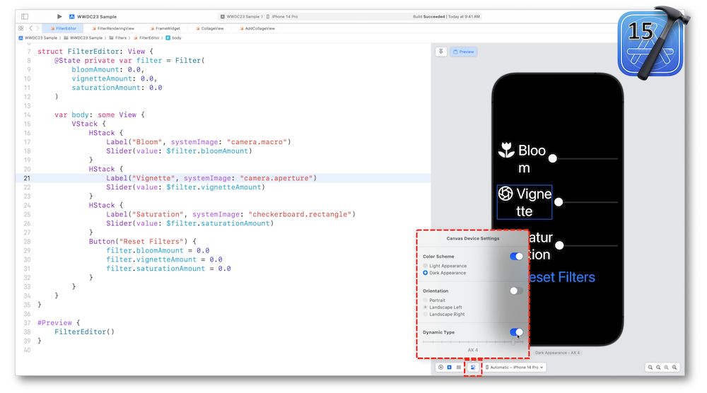
Tips & tricks #
- Fix the position of
SwiftUIelements according to their dynamic type sizes in two steps.
Add a header to the created sections.
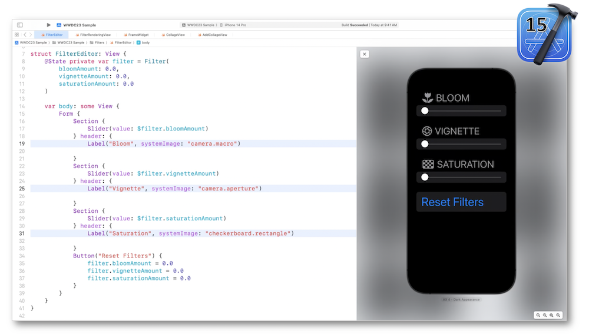
- Add an image filter inside a view controller.
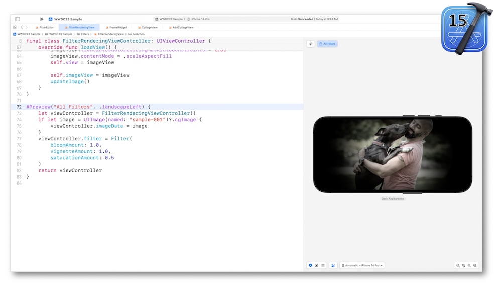
Previews in a project #
Previewing in libraries #
Previews rely on three source elements to unravel the appropriate executable to be used.
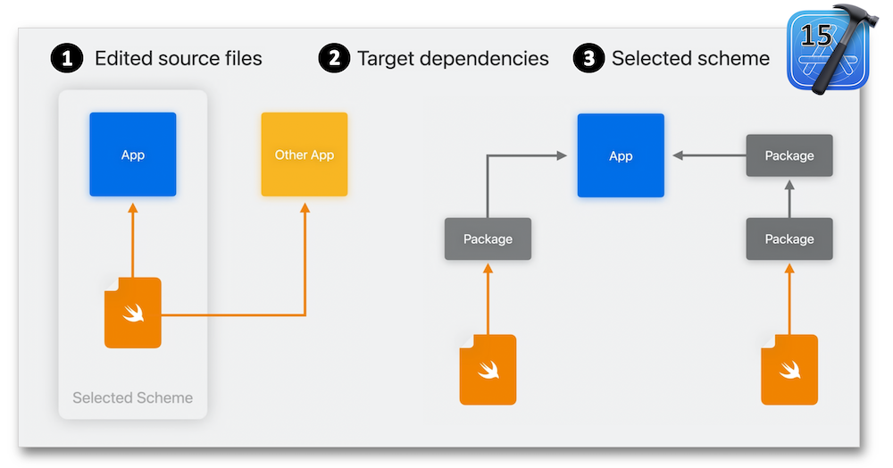
Should no app exist, the system creates it under a XCPreviewAgent for loading the library.
Based on the suggested two ways for improving the libraries previews, the crucial steps to create a dedicated app for previews are highlighted and detailed hereafter.
Providing sample assets #
The Development Assets feature might be of a great help while automatically removing everything inside specific paths when submitting to the App Store.
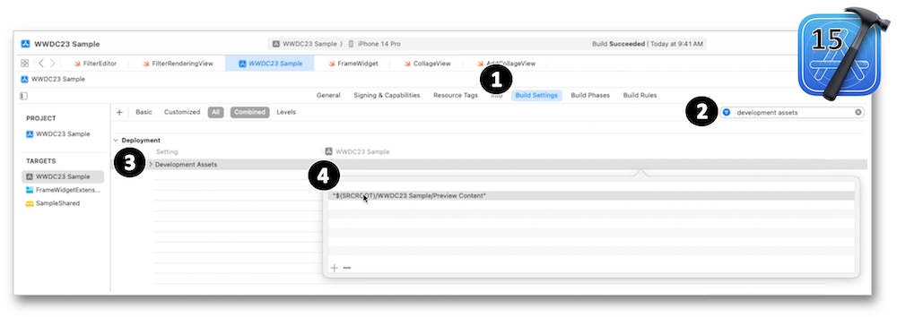
Leveraging devices #
Previews can be performed through the preview device picker located in the canvas:
- In the Automatic mode,
- Thanks to a specific device feature found out in the middle section,
- With a loaded simulator device pointed out with the
Moresubmenu.
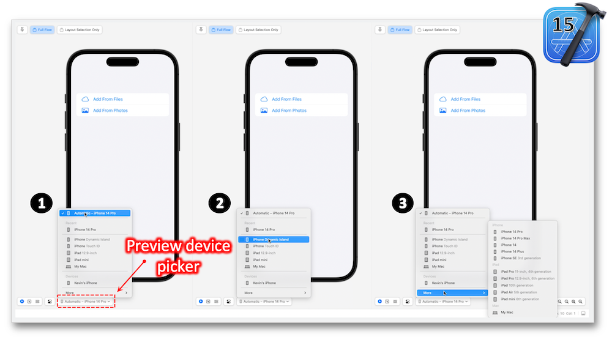
Besides the simulators, previews may also be displayed on real devices including all the features Xcode provides for previewing.
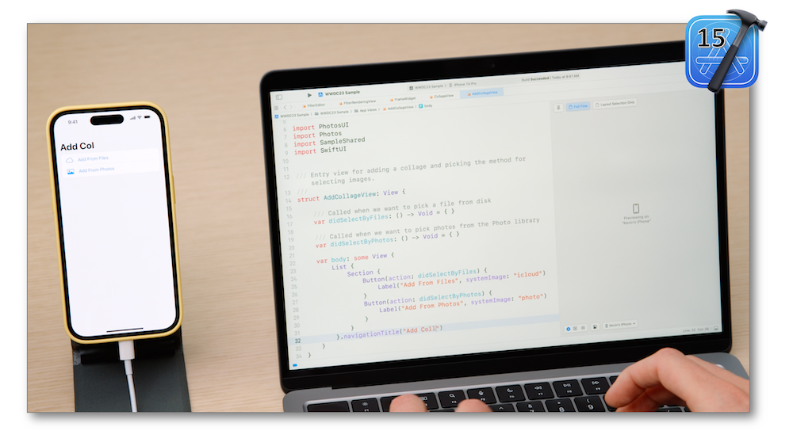